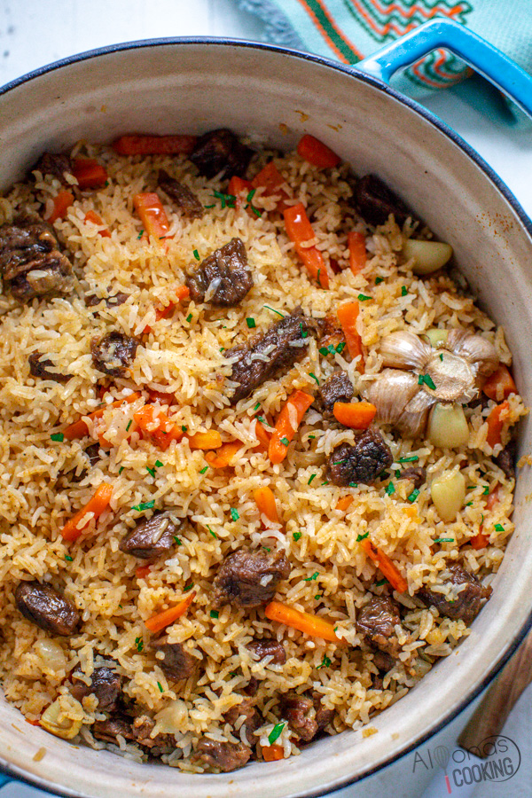

Plov Recipe

Descriptions
Plov is the national dish of Uzbekistan. It's a delicious dish that involves cooking rice with broth,
adding spices, proteins and vegetables in the same pot.This cooking style has a long history and
plov is merely one of the many variations. Other notable examples are biryani from India, paella from Spain,
pilau from East Africa.
Ingredients
- 2 lb of beef
- 1 yellow onion
- 3 carrots
- 2 cup long grain rice
- 2 cups of chicken stock
- 3 bay leaves
- 5 cloves of garlic
- 1/2 cup of oil
- salt
- pepper
Instructions
- Chop onion into 1/4 inch pieces
- Cut carrot into finger length sticks
- Mince garlic
- Cut beef into 1 inch cube
- Add oil into a pot, wait until hot then beef and sear on all sides
- Add in vegetables and cook for 10 mins
- Add in rice and broth
- Add salt and pepper to taste
- Cook on low for 1 hr then serve